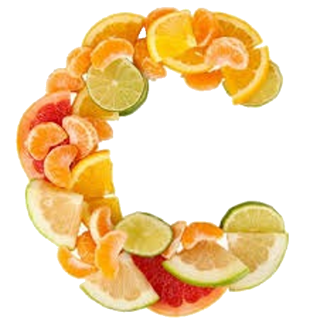

שלב 8-ויטמין C
שיר הלכה לרופא והרופא אמר לה שיש לה מחסור בויטמין c. הוא הסביר לה שהוא עוזר בספיגת חומר מתכתי. תוכלט לעזור לה ולומר לה מהו החומר הזה?
ויטמין C הוא אחד הוויטמינים החיוניים ביותר שיש, משום שהוא מסייע בשלל תהליכים בגוף.
חוסר של ויטמין C עלול לגרום למחלות ולפגוע בבריאות, כמויות גדולות נחשבות כמועילות לבריאות
הוא נמצא לרוב בפירות וירקות, אבל ניתן לצרוך אותו גם בתוספי תזונה.
הוא מרפא מפני מחלות חורף, ושפעת במיוחד, מסייע נגד אלרגיות ועשוי לסייע במניעת מחלות קשות כמו סוכרת, דלקות כרוניות וריפוי. כמו כן, ויטמין הוגדר כנוגד חמצון משמעותי. מחסור ממנו עלול להתאפיין בדימומים ודלקות בחניכיים, שיניים משוחררות, דימומים שטחיים, התרפאות איטית של פצעים, חולשה חיסונית ואנמיה קלה. הוא עוזר בשמירה על בריאות העור, השיניים, החניכיים, ויכול להועיל לבריאותם של מעשנים. הוא חיוני לספיגה טובה של ברזל, ליצירת מוליכים עצביים שונים ושל חומרים. כמו כן, ריכוזים גבוהים שלו אפשר למצוא בבלוטות שונות, כגון בלוטת יותרת המוח, בלוטת התריס, בהיפופיזה וברשתית העין וגם בלא מעט אברים פנימיים כמו הטחול, המוח, הריאות ועוד.
